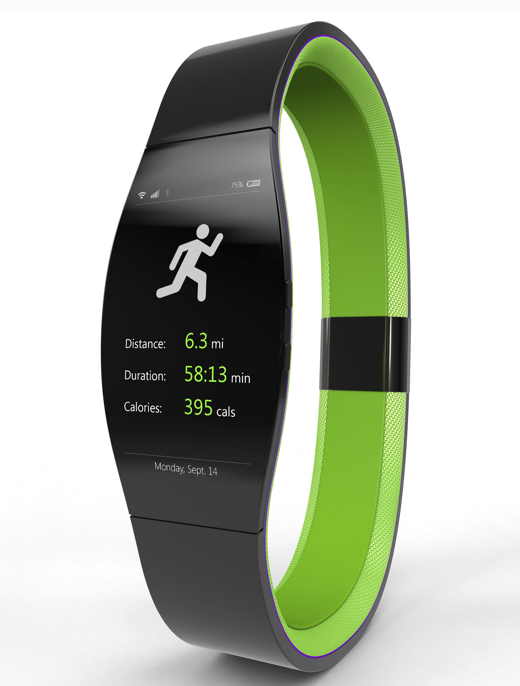

Q5. Based on the Manovich reading, and following up on Q.1 ., As a group, find some images of 2 or more different examples of technologies that embodies for you the authors idea of how interfaces to early electronics or machine systems were designed in the past. Specifically look for examples from 1950's,60's, and 70's, (..not 1980's and 90's...). Explain why these are good examples. Then list 2 or more more images of examples of technology that embody the authors ideas of how interfaces are today. Again, explain why these are good examples. Please include images and text description for each example you are refering to. At least 2 images minimum per person from a group. For example a group of 3 should have 6 images. Share these images as a group in discord, and then publish your images on your readings website.
Old techs

Car Phone
It is as it sounds--a phone for car. It has no UI, only the dial and buttons that serve dialing phone numbers. No gamification to be found.
{kind=link}
Stove
Simple and function over form: The white coating so housewifes (the 50s) can easily spot stain and dirty spot; dials knobs. No gamification to be found either.
New techs
{kind=link}
Fitbit
Gamify your average watch: Sleek-flat design, multiple scroll screen and interactive touch-screen. This technology has many gamification and aestheticization implemented in it.
{kind=link}
Beat headphone
Aestheticized to shows "style": This designed is aimed at bringing a experience over quality (according to my reviews when I was browsing for headphone). When in-use, the "b" shape is lid with the beat to serve to enchance user's experience when using the product.
Q6. As a group, please come up with examples of two different kind of technology that normally don't have this interface design or 'consideration' mentioned in the reading and podcast, but could benefit from this 'theatrifaction' or 'gamification' idea of its interface. Please describe what would you suggest doing to it to change it.
Calendar
Calendar could benefit from gamification since people often forget to look at calendar. More important stuffs would get done.
Q7. Jer Thorp Discussion.
TBA